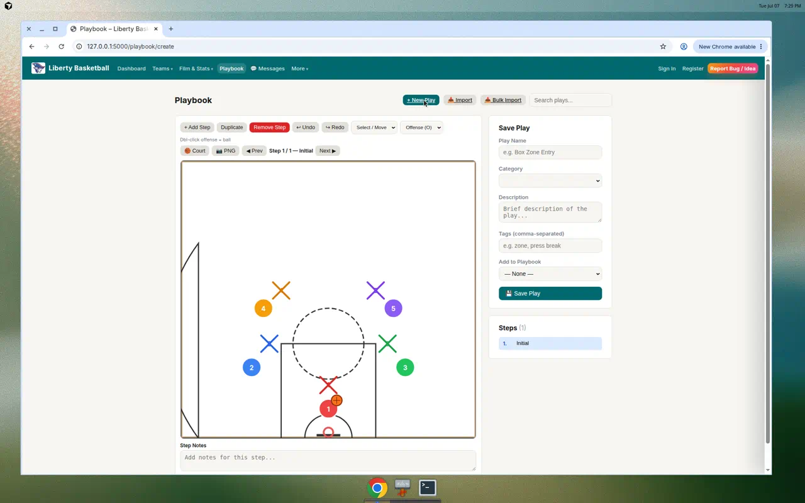
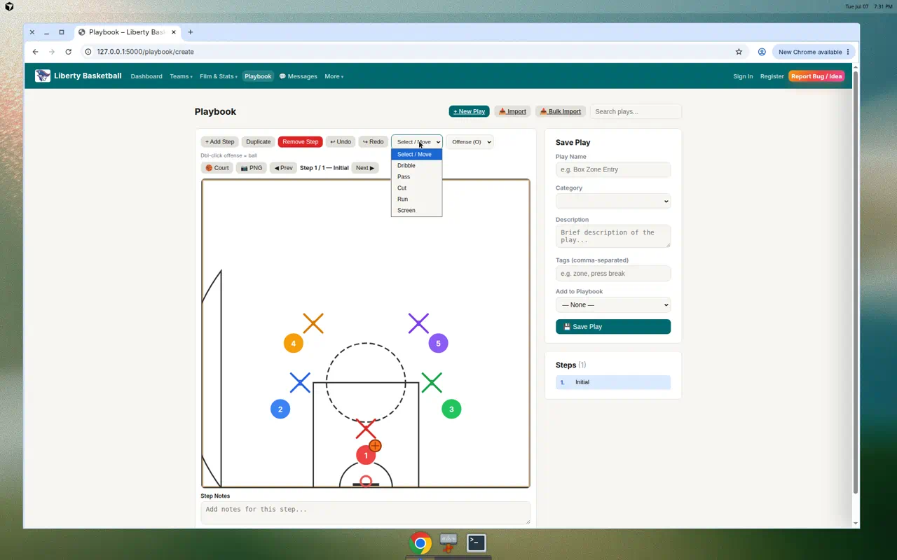
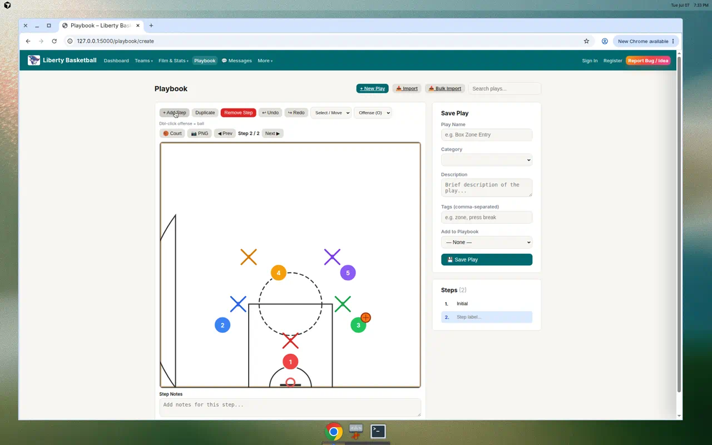
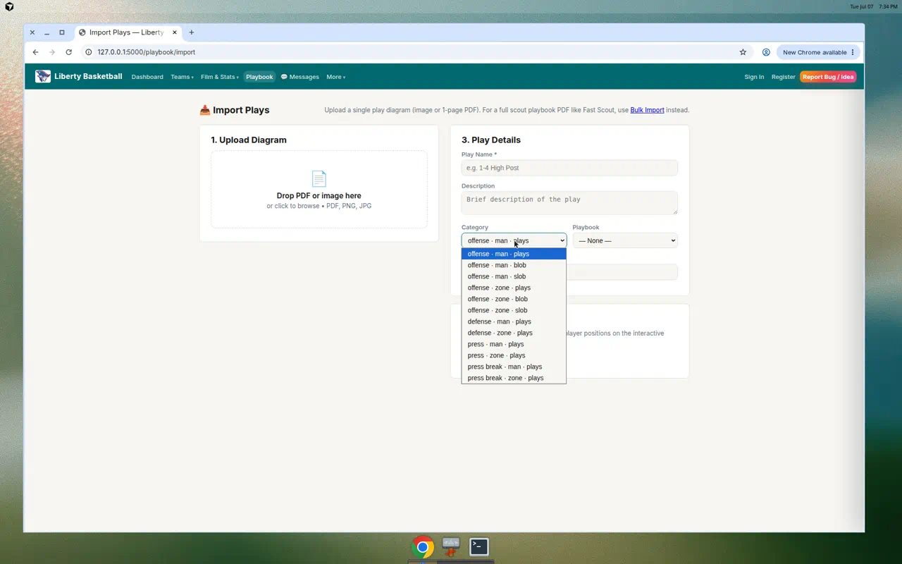

Work in progress — feedback welcome
Liberty Playbook & Play Creator
Preview for coaching staff · July 2026 · Inspired by Hoops Geek-style diagramming
We are building a digital playbook inside Liberty Basketball Analysis so you can organize plays by situation, draw them on a court, animate steps, and import scout PDFs — all in one place.
Category tree
Play creator canvas
Ball handler
PDF import
Coach review
How to use this deck: Scroll through the slides, watch the demo video (link below), then fill in the feedback section at the bottom. Tell us what would make this useful in practice and film sessions.
Why we're building this
- One library — offense, defense, press, and press break in the same tool as film and stats
- Same structure as our scout PDFs — Man/Zone, BLOB, SLOB sections match Fast Scout-style playbooks
- Draw & animate — like Hoops Geek: move players, show passes, cuts, dribbles, screens
- Import existing PDFs — bulk import a full scout book instead of retyping every play
Play categories
Every play lives in a clear hierarchy. You can add custom folders (e.g. "Horns" under Offense → Man) and move or rename them.
Offense → Man / Zone → Plays, BLOB, SLOB
Defense → Man / Zone → Plays
Press → Man / Zone → Plays
Press Break → Man / Zone → Plays
On the Playbook page, a sidebar lets you filter plays by category. Buttons: Add · Rename · Move · Delete.
Play creator (draw on the court)
- Half-court or full-court view
- 5 offense (circles) + 5 defense (X's)
- Tools: Dribble · Pass · Cut · Run · Screen
- Double-click an offensive player to assign the ball handler (orange ball)
- Multiple steps per play with smooth animation
- Export diagram as PNG

New play — court canvas with player positions
Drawing tools & ball handler

Movement tools dropdown
Ball handler assigned (orange icon)
To draw a pass or cut: pick the tool, click the from player, then the to player. Use Select/Move to drag players into position.
Multi-step plays
Each play can have several steps (e.g. initial set → screen → cut → shot). Add steps, duplicate them, and play back the animation for walk-throughs.
- Label each step ("Down screen", "Replace", etc.)
- Notes per step for teaching points
- View mode: ▶ Play All animates player movement

Step 2 added — step list on the right
Import from PDF
Single import — one diagram (image or 1-page PDF)
Bulk import — full scout playbook; Liberty reads headers like Liberty Charter Patriots - BLOB and sorts plays automatically.
Both use the same category picker so imported plays land in the right Man/Zone folder.

Category picker — offense · man · blob, etc.
Try it on your machine
After the latest update is pulled:
- Double-click Start Liberty.bat (or run
python scripts/launch_liberty.py)
- Open Playbook in the nav (or go to
/playbook)
- Click + New Play to open the creator
- Use Bulk Import for a full scout PDF
Requires pip install pymupdf for PDF import (included in requirements-dev.txt).
We need your feedback
Please answer these questions — copy your notes and send to the staff lead or reply in your team channel.
1. Category structure
2. Play creator
3. Practice & film use
4. Import workflow
Coming next (if useful)
- Shareable play link for players
- MP4 export of animated plays
- Optional vs synchronous action flags per step
- Link plays to film clips (tag a possession with the play name)
Thank you for reviewing — your input shapes what we build next.